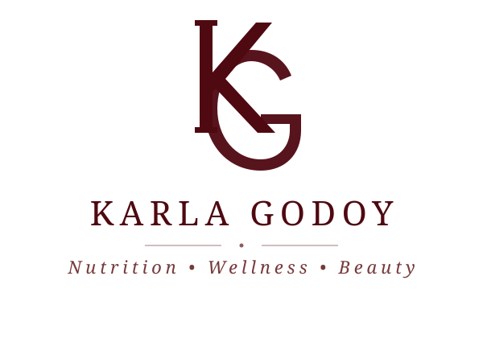
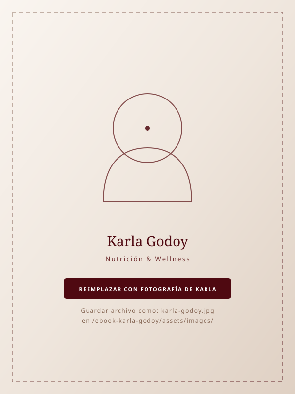

EBOOK OFICIAL • MÉTODO BALANCE
HAGO TODO BIEN
Y NO PIERDO GRASALa guía para entender qué está frenando tus resultados y construir una estrategia que sí puedas sostener.
MÉTODO BALANCE
Transforma tu cuerpo sin extremos.
La guía para entender qué está frenando tus resultados y construir una estrategia que sí puedas sostener.

Karla GodoyUna guía clínica y práctica para transformar tu relación con la alimentación y el movimiento corporal.
Diseñado bajo los lineamientos del Manual de Identidad Visual de Karla Godoy.
Tipografías editoriales: Cormorant Garamond, Playfair Display y Plus Jakarta Sans.
Paleta cromática oficial: Burgundy (#4F0911), Marsala (#713132), Dusty Rose (#916066), Earth Taupe (#856654), Soft Nude (#D0BDAC).
Este material es educativo y no sustituye una valoración individual por un profesional de la salud. Si tienes una condición médica, cambios importantes en tu menstruación, síntomas persistentes, antecedentes de un trastorno de la conducta alimentaria o cualquier preocupación sobre tu salud, busca atención profesional personalizada.
© Todos los derechos reservados. Prohibida la reproducción total o parcial de esta obra sin la autorización expresa de la autora.
Primera Edición Digital • 2026
Navega por cada capítulo de tu guía y cuaderno de trabajo del Método Balance.
“No necesitas hacerlo perfecto. Necesitas hacerlo de forma que puedas sostenerlo.”
Antes de cambiar tu cuerpo, aprende a entenderlo.
Porque no puedes construir una estrategia adecuada para un cuerpo, una rutina y una vida que todavía no conoces.
Tal vez llevas meses intentando cambiar.
Comes “saludable”. Entrenas. Tomas agua. Intentas cuidarte durante la semana.
Y aun así te miras al espejo y piensas:
Pero aquí quiero que hagamos algo diferente.
Antes de quitar alimentos. Antes de aumentar el cardio. Antes de hacer otra dieta. Antes de decirte que necesitas más disciplina… vamos a entender tu punto de partida.
Porque no puedes construir una estrategia adecuada para un cuerpo, una rutina y una vida que todavía no conoces.
Tu alimentación no existe separada de tu vida. Lo que comes está relacionado con:
Por eso, una estrategia que funciona para otra mujer puede no ser la adecuada para ti. No necesitas copiar la dieta de alguien más. Necesitas descubrir qué necesita tu cuerpo y qué puedes sostener tú.
1. ¿Cómo estoy comiendo realmente?
No cómo “debería” estar comiendo. ¿Cómo estás comiendo hoy?
¿Saltas comidas? ¿Llegas con demasiada hambre a la noche? ¿Comes muy poco durante el día y después tienes antojos? ¿Tus fines de semana cambian completamente? ¿Tus porciones son consistentes?
2. ¿Cómo me estoy moviendo?
No solamente cuenta el entrenamiento. También importa cuánto caminas, cuánto tiempo pasas sentada y cuánto movimiento acumulas durante el día.
3. ¿Cómo estoy entrenando?
Pregúntate: ¿Mi entrenamiento realmente está alineado con mi objetivo? Entrenar más no siempre significa obtener mejores resultados. La estrategia también está en saber cuándo entrenar, cómo progresar y cuándo recuperarte.
4. ¿Cómo me estoy sintiendo?
Tu bienestar también es información. Observa:
• Energía • Hambre y saciedad • Digestión • Sueño • Estado de ánimo • Rendimiento • Recuperación. Si algo se siente constantemente fuera de equilibrio, merece atención.
5. ¿Mi estrategia cabe dentro de mi vida?
Esta pregunta es CLAVE. Porque una alimentación perfecta durante cinco días que no puedes mantener el fin de semana… no es una estrategia sostenible.
Uno de los errores más comunes es comenzar un proceso queriendo cambiar TODO.
Y después de dos semanas… agotamiento.
“No estamos buscando culpables. Estamos buscando información. Ese cambio de perspectiva lo cambia todo.”
Diagnóstico de situación actual. Completa con total honestidad.
Porque hacer más no siempre significa hacerlo mejor.
“El objetivo no es aprender a ser perfecta. Es aprender a regresar a tu estrategia sin castigarte.”
¿Te ha pasado?
Llega el lunes y dices: “Ahora sí.”
Comes perfecto. Entrenas. Eliminas ciertos alimentos. Te propones ser súper disciplinada. Te sientes orgullosa.
Hasta que llega el viernes, sábado o domingo.
Tienes una comida fuera. Comes algo que habías prohibido. Sientes que “rompiste la dieta”.
Y aparece el pensamiento:
Entonces comes más. El lunes vuelves a restringir. Y el ciclo comienza otra vez.
restricción → hambre/antojos → pérdida de control → culpa → restricción
Cuando una estrategia es demasiado rígida, cualquier desviación puede sentirse como un fracaso. Y eso puede llevarte a compensar.
El objetivo no es aprender a ser perfecta. Es aprender a regresar a tu estrategia sin castigarte.
Tu cuerpo no necesita castigo para transformarse. Una alimentación adecuada puede incluir estructura y objetivos sin convertir la comida en una batalla.
Cuando mantienes una restricción energética excesiva durante mucho tiempo, tu cuerpo puede adaptarse.
Puede disminuir el gasto energético y aumentar las señales de hambre, mientras mantener el proceso se vuelve cada vez más difícil.
Además, una estrategia demasiado restrictiva puede afectar tu rendimiento, recuperación y relación con la comida.
Por eso: menos comida no siempre significa mejores resultados. La cantidad adecuada depende de la persona, su contexto, su actividad y su objetivo.
En lugar de: “¿Qué puedo eliminar?”
Empieza a preguntar: “¿Qué necesita mi cuerpo para funcionar y qué estrategia puedo sostener?”
Ese es el cambio.
“No necesito hacerlo perfecto. Necesito hacerlo de forma que pueda sostenerlo.”
Comer saludable no es lo mismo que comer estratégicamente.
“Pero si todo lo que como es saludable, ¿por qué no veo cambios?”
Aquí probablemente está una de las mayores confusiones.
Puedes estar comiendo: aguacate, nueces, aceite de oliva, granola, crema de almendras, smoothies, chocolate oscuro… y pensar: “¿Por qué no veo cambios?”
Porque saludable y adecuado para tu objetivo no son exactamente lo mismo. Un alimento puede ser nutritivo y, al mismo tiempo, aportar una cantidad importante de energía. La clave no es tenerle miedo. La clave es saber integrarlo.
Una alimentación equilibrada necesita variedad y suficiente energía. Como base, piensa en:
🍗 PROTEÍNA
Ayuda a mantener y desarrollar masa muscular y contribuye a la saciedad.
Ejemplos: pollo, pescado, huevo, carne magra, yogurt, queso cottage, leguminosas, tofu.
🥦 VEGETALES Y FRUTAS
Aportan fibra, vitaminas, minerales y otros compuestos beneficiosos.
🍚 CARBOHIDRATOS
Son una fuente importante de energía.
Arroz, papa, avena, tortilla, quinoa, pasta, pan y otros cereales pueden formar parte de una alimentación saludable.
🥑 GRASAS
Son importantes para múltiples funciones del organismo.
Aguacate, aceite de oliva, nueces, semillas, etc.
💧 HIDRATACIÓN
El agua también forma parte de tu estrategia.
Y aquí aparece una de las diferencias de tu método: No quiero enseñarte solamente qué alimentos comer. Quiero enseñarte a pensar:
¿Qué necesito? • ¿Cuánto necesito? • ¿Cuándo me conviene comerlo?
¿Cómo lo puedo combinar? • ¿Cómo lo adapto a mi vida?
Como herramienta visual sencilla, imagina tu comida como una estructura:
No necesitas que cada plato sea matemáticamente perfecto. Necesitas aprender a reconocer qué le falta a una comida para que sea más completa.
Ensalada + un aderezo ligero.
Puede verse “muy saludable”, pero quizá le falte una fuente adecuada de proteína y energía.
Pollo + verduras + arroz + aguacate.
No por una combinación mágica, sino porque construyes una comida completa y saciante.
Que algo sea saludable no significa que debas comerlo sin límite: Nueces, cremas de frutos secos, granola, aceites, aguacate, quesos, postres “fit”.
No necesitas eliminarlos. Necesitas aprender a integrarlos en cantidades adecuadas para ti.
Aplica la estructura del Plato Balance a una comida de tu día a día.
En lugar de: “¿Esto engorda?”
pregunta: “¿Cómo encaja este alimento dentro de mi estrategia?”
No entrenes solamente para quemar calorías. Entrena para construir.
“No entreno para castigar mi cuerpo. Entreno para construirlo, cuidarlo y disfrutarlo.”
Si tu objetivo es transformar tu composición corporal, el ejercicio debe ser mucho más que “quemar lo que comí”.
Tu cuerpo también necesita estímulos para:
El entrenamiento de fuerza puede ser una herramienta fundamental para desarrollar y mantener masa muscular.
Y no necesitas vivir en el gimnasio. Necesitas:
Eso puede significar entrenar fuerza varias veces por semana, dependiendo de tu nivel, objetivo y disponibilidad.
El cardio no es el enemigo. Caminar, correr, nadar, bailar, hacer bicicleta o cualquier actividad cardiovascular puede ser excelente para tu salud y condición física.
El problema aparece cuando lo utilizas como castigo: “Comí esto, entonces tengo que hacer una hora extra.”
No. Muévete porque tu cuerpo lo necesita, no porque tengas que pagar por haber comido.
“No entreno para castigar mi cuerpo. Entreno para construirlo, cuidarlo y disfrutarlo.”
Porque tu vida no ocurre de lunes a viernes en tu cocina.
Aquí es donde muchas dietas fracasan. Funcionan mientras todo está bajo control. Pero tu estrategia debe acompañarte en la vida real.
Llega un viaje ✈️, una cena 🍷, un cumpleaños 🎂, una semana pesada 💼, vacaciones 🏖️, o una comida familiar 👨👩👧. Y aparece: “Ya rompí la dieta.”
Pero tu estrategia no debería desaparecer porque saliste de tu rutina. Debe acompañarte.
EN UN RESTAURANTE
No necesitas buscar la opción más “fit” del menú. Busca una comida que tenga sentido para ti. Puedes priorizar:
• Una fuente de proteína • Verduras o alimentos ricos en fibra • Una fuente de carbohidratos • Una cantidad adecuada de grasa • Agua como bebida principal • Y si quieres postre, disfrutarlo conscientemente. No necesitas llegar con hambre extrema para “guardar calorías”.
EN UN VIAJE
Tu objetivo no es comer perfecto. Tu objetivo es mantener estructura dentro de una situación diferente:
• Llevar snacks prácticos • Mantener comidas principales equilibradas • Priorizar proteína y fibra • Caminar y mantenerte activa • Disfrutar alimentos locales sin convertirlos en un “todo o nada”.
SI TIENES UN EVENTO
No llegues pensando: “Hoy no voy a comer nada porque en la noche voy a cenar.” Eso puede hacer que llegues con hambre excesiva. En cambio: come normalmente durante el día, llega con una estrategia y disfruta.
¿Y SI UN DÍA NO ENTRENAS?
No pasó nada. Un día no define tu cuerpo. Una semana tampoco. Si no puedes entrenar, puedes enfocarte en otras cosas que sí están bajo tu control: alimentación, hidratación, sueño, movimiento diario, pasos, recuperación. Y regresar a tu entrenamiento cuando puedas.
PREPARACIÓN > FUERZA DE VOLUNTAD
Una de las mejores estrategias para reducir decisiones impulsivas es preparar tu entorno:
Si sabes que ciertos días tienes más hambre: prepárate. Si viajas: lleva opciones. Si trabajas hasta tarde: planea tu comida. No se trata de tener más fuerza de voluntad. Se trata de hacer que la decisión saludable sea más fácil.
Tu transformación no depende de un día perfecto. Depende de lo que haces repetidamente.
Aquí quiero que dejes de pensar: “Tengo que cambiar mi vida” y empieces a pensar: “¿Qué pequeño comportamiento puedo repetir?” Porque una estrategia se convierte en transformación cuando se vuelve hábito.
Si hoy: tomas poca agua, no desayunas o comes de manera irregular, no entrenas fuerza, duermes poco, comes con ansiedad, no caminas, no planeas tus comidas… no necesitas solucionar las siete cosas mañana. Escoge una o dos. Domínalas. Después agrega la siguiente.
Puedes trabajar sobre cinco pilares:
1. ALIMENTACIÓN: Crear comidas estructuradas y suficientes para ti.
2. MOVIMIENTO: Mantenerte activa durante el día.
3. FUERZA: Entrenar de manera consistente y progresiva.
4. RECUPERACIÓN: Dormir y darle descanso a tu cuerpo.
5. PREPARACIÓN: Organizar tu entorno para facilitar buenas decisiones.
Una estrategia sostenible necesita una versión para los días buenos… y una versión para los días difíciles. Por ejemplo:
Entrenamiento de fuerza.
Caminar y comidas estructuradas.
Eso evita la mentalidad de: “Como hoy no pude hacer todo, no hago nada.”
Define tus anclas conductuales para los próximos 7 días sin sobreexigencia.
“No necesitas una vida perfecta para cuidar de ti. Necesitas una estrategia flexible para tu vida real.”
Tu progreso es mucho más grande que un número.
Aquí quiero cambiar una idea muy arraigada: “Si la báscula no baja, no estoy progresando.” No necesariamente. El peso es solamente un dato; no define tu valor ni cuenta toda la historia.
El peso corporal puede variar por diferentes razones: hidratación, contenido intestinal, cambios hormonales, entrenamiento y otros factores. Por eso, una sola medición no cuenta toda la historia.
Dependiendo de tu objetivo, también puedes observar:
👗 CÓMO TE QUEDA LA ROPA
¿Hay cambios en cómo se ajusta?
🪞 CÓMO TE VES
¿Notas cambios en tu composición corporal?
💪 TU FUERZA
¿Estás levantando más peso? ¿Haces más reps?
⚡ TU ENERGÍA
¿Te sientes con más energía durante el día?
🍽️ RELACIÓN CON LA COMIDA
¿Hay menos culpa? ¿Menos todo o nada?
😴 TU RECUPERACIÓN
¿Duermes mejor? ¿Te recuperas mejor?
🧠 TU BIENESTAR
¿Te sientes más enfocada, tranquila y segura?
El peso puede ser un dato útil en determinados contextos. Pero es solamente un dato. No define tu valor. Y tampoco puede explicar por sí solo todo lo que está pasando con tu cuerpo.
Por eso, en el Método BALANCE buscamos observar diferentes indicadores y, cuando es necesario, utilizar mediciones más completas y personalizadas.
Sí. Quieres verte increíble. Y está bien. Pero quiero que también quieras: sentirte increíble.
Tener energía • Sentirte fuerte • Disfrutar la comida • Salir a cenar sin culpa
Viajar sin miedo • Entrenar porque te gusta • Mirarte al espejo y sentir orgullo.
Ahora no quiero que cierres este ebook pensando: “Qué bonito todo.” Quiero que hagas algo. Durante los próximos 7 días:
No vuelvas a empezar cada lunes. Continúa. Si un día no sale perfecto, vuelves a tu siguiente comida. Si no entrenaste, retomas cuando puedas. Una comida no arruina tu progreso. Un día no define tu transformación. Lo que importa es lo que haces la mayoría del tiempo.
Si llegaste hasta aquí, quiero que te quedes con algo:
Tal vez nunca te faltó disciplina. Tal vez llevabas demasiado tiempo intentando conseguir resultados desde el extremo: más restricción, más cardio, más reglas, más culpa, más exigencia.
Y quizá lo que necesitabas era algo diferente: ESTRATEGIA. Una estrategia que considere tu cuerpo, tu alimentación, tu entrenamiento, tu rutina, tus gustos, tu vida y también tu bienestar.
CONÓCETE
Entiende dónde estás.
ROMPE CON LOS EXTREMOS
Deja atrás el todo o nada.
ALIMENTA
Estructura y nutrición.
ENTRENA
Construye fuerza y movimiento.
VIVE
Estrategia en la vida real.
SOSTÉN
Convierte lo que haces en hábitos.
MIDE
Observa el progreso más allá de un número.
“¿Qué pasaría si dejaras de pelearte con tu cuerpo y empezaras a trabajar con él? Tu estrategia debe adaptarse a ti. No tú a una dieta.”

Este ebook te enseñó los fundamentos del Método BALANCE. Pero hay algo que quiero que tengas claro: tu cuerpo, tu historia, tus hábitos, tu alimentación, tu entrenamiento y tu estilo de vida son únicos.
Por eso, una guía puede enseñarte el camino… pero una estrategia personalizada puede ayudarte a saber cómo recorrerlo tú. En mis consultas 1:1, analizamos tu contexto para construir una estrategia que tenga sentido para tu vida. Porque yo no quiero que tú te adaptes a mi dieta; yo quiero adaptar la estrategia a ti.
El enlace de agenda se incorporará al confirmar el canal de contacto.
Este material es educativo y no sustituye una valoración individual por un profesional de la salud. Si tienes una condición médica, cambios importantes en tu menstruación, síntomas persistentes, antecedentes de un TCA o cualquier duda médica, busca atención profesional personalizada.
Material complementario disponible por separado.
Consulta con Karla Godoy la disponibilidad de este material.
“Transforma tu cuerpo sin extremos.
Nutrición sin culpa, movimiento consciente y una estrategia que sí puedas sostener.”